Where capital
meets connection.
Hannah Weymuller is a Managing Partner at Terra Axis, where she serves as Managing Director, Investor Relations and Business Development.
Meraki Ascent was built on one belief: the right connections change everything. At Terra Axis, that belief shows up on the capital side of the table.
As Managing Director, Investor Relations and Business Development, Hannah leads the relationships that sit between a firm and the people and partners who believe in it. It is the same work she does for founders through Meraki Ascent, carried into investment and long-term company building.
Clear, consistent communication with the people behind the capital. Building trust that is measured in years, not quarters, and making sure every relationship is cared for with the same attention.
Finding and opening the partnerships, introductions, and opportunities that help Terra Axis and the companies it works with grow. Real research, a real reason, and a human-first conversation to open the door.

Terra Axis brings a long-term investment perspective, operating experience, advisory services, and technology capabilities together, without blurring the distinct roles involved.
It works two ways: it invests through its funds, and it builds through Terra Axis, PBC, which delivers business advisory and technology services to companies.
Terra Axis is currently raising capital across its five funds. Offerings are open only to accredited investors, and eligibility is verified.
Investor inquiries: ir@terraaxis.co
Most marketers have never sat across from an investor. Most investor relations people have never built a brand from scratch. Hannah does both, and that is the point.
Through Meraki Ascent, founders get business development and marketing support from someone who understands how capital thinks: what earns trust, what a story needs to prove, and how long the best relationships take to build.
Talk with Hannah about business development and growth strategy through Meraki Ascent.
Meraki Ascent LLC and Terra Axis are separate companies. Terra Axis fund offerings are made under Rule 506(c) of Regulation D and only to accredited investors whose status Terra Axis verifies. This page is not an offer to sell, or a solicitation of an offer to buy, any security; any offer is made only through Terra Axis offering documents.